maven的依赖特性
3.1 依赖范围
pom文件里面，dependency中有一个scope，里面有很多选项：
compile、import、provided、runtime、system、test
这一节只讲compile
compile是默认的依赖范围，如果设置范围为compile，那么会在编译的时候把依赖加进去。打包的时候也会把依赖加进去。
provided：在编译和测试的过程有效，最后生成war包时不会加入，诸如：servlet-api，因为servlet-api，tomcat等web服务器已经存在了，如果再打包会冲突。
runtime：在运行的时候依赖，在编译的时候不依赖。
test范围指的是测试范围有效，在编译和打包时都不会使用这个依赖
接下来我们就在我们的user-core中的pom.xml对各个依赖添加范围：
这时候会发现，在user-core的zttc.itat.user.util包中出现很多错误，结果发现里面都引用了junit的包，但是junit已经设置为test范围，那么在src的引用自然不会找到对应的依赖。所以我们将那些用到junit的java文件放到test里面，之后再去clean、install，就会将user-core重新打包，而且这一次，那些测试相关的依赖不会加入到包中。
同样的，我们也可以修改user-service中的依赖范围。
3.2 依赖的传递性
1、依赖是会被传递
A–>C B–>A ==> B–>C（这种依赖是基于compile这个范围进行传递）
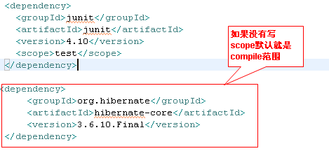
对于依赖的传递而言，主要是针对compile作用域传递
2、依赖的冲突问题
同级别依赖：
a–>b1.0 c–>b1.1 d–>a和c，这个时候在d的pom中，哪一个依赖先写就使用先写依赖的版本
比如我们的user-service中，先依赖user-log，后依赖user-core，user-log用的是log4j 1.2.9，user-core用的是log4j 1.2.17，那么user-service就会将log4j 1.2.9引进来。
不同级依赖：
a–>b1.0 c–>b1.1 d–>a和c–>b1.0 f–>d,c,如果路径的长短不一致就选择最小路径
f–>b1.1
在IDEA中可以通过右键pom.xml，然后Diagrams–Show Dependencies，就可以查看这个项目的依赖关系图。
例如我们的user-core的依赖继承图为：
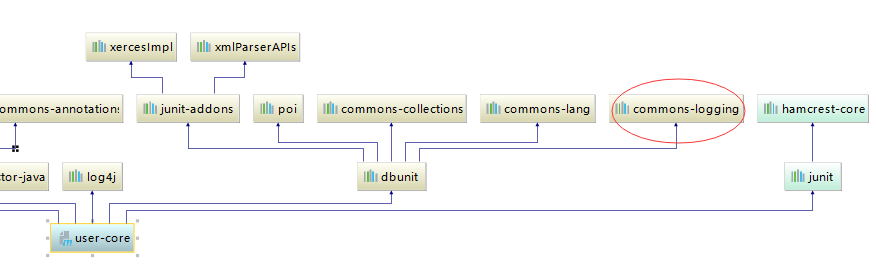
user-log的依赖继承图为：
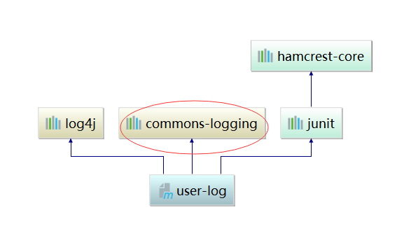
那么user-service的commons-logging就会选择user-log的，也就是commons-logging 1.1.1版本，因为依赖路径比较短。
那如果我们只想要user-core的，怎么做？
可以在user-service中加入模块对依赖的排除：
这样再看我们引用的包，就是commons-logging 1.0.4
maven的聚合和继承
4.1 聚合
之前我们写了三个模块，每一个模块都得单独写pom.xml文件，单独进行clean和compile操作。试想如果在模块很多的情况下，这个工作量也是很大的。我们的想法是构建一个专门的模块，来将这三个模块聚合在一起。这个就是maven的聚合。
我们先在这三个模块的根目录中，创建一个单纯的模块，里面只放一个用来集中控制的pom.xml：
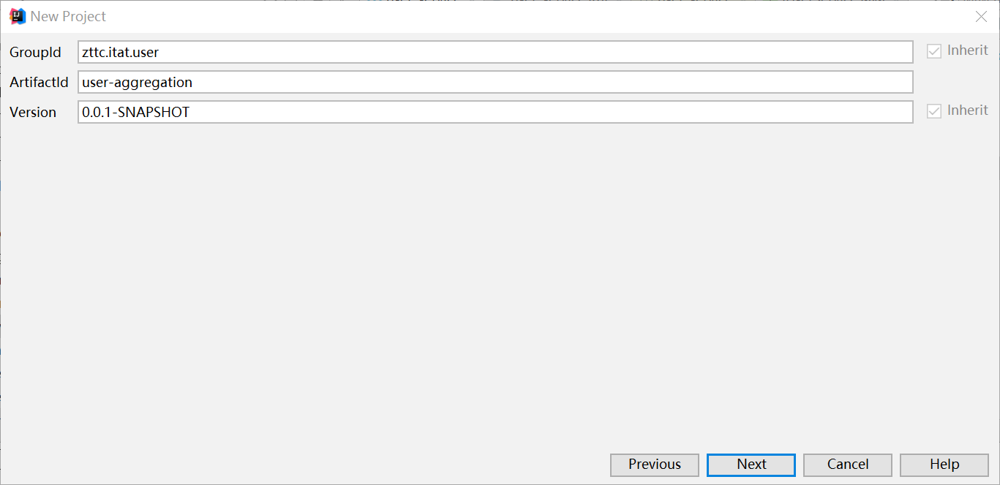
建立好这个聚合模块以后，我们只编写pom.xml文件：
然后我们在user-aggregation模块中执行clean和package操作，发现前面两个模块都打包成功，只有第三个报了错。
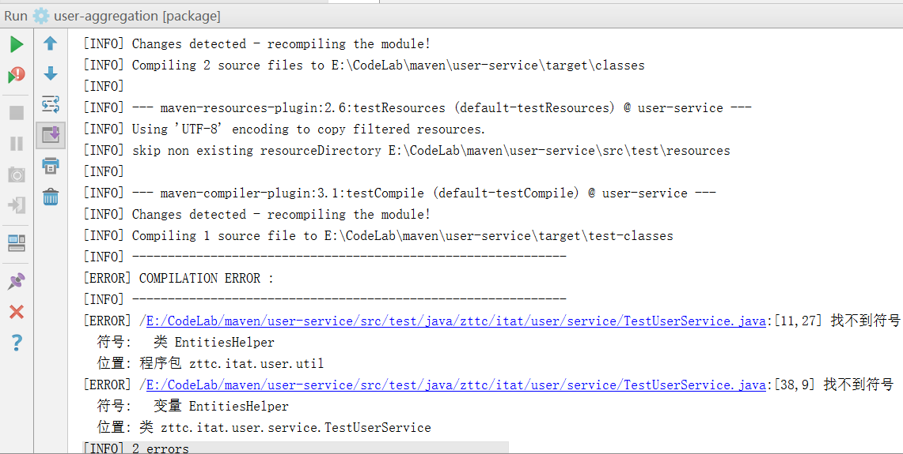
这是由于user-core的test中EntitiesHelper文件并没有引入到user-service中，所以找不到对应类，就会报错。
我们需要做的，就是把EntitiesHelper类连同其package一并粘贴到user-service的test/java中，再次compile：
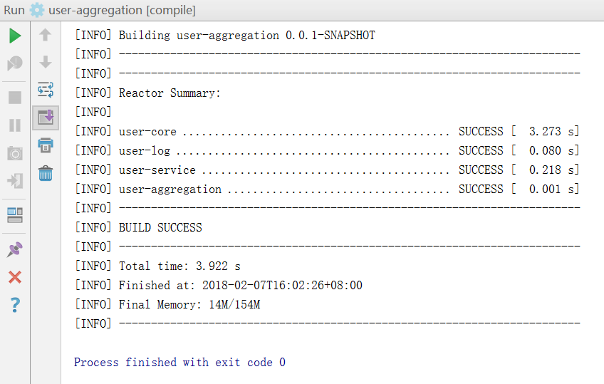
成功了~
以上就是我们的聚合操作。
4.2 继承
另外我们发现，三个模块中有大量的重复依赖，那么能不能让所有的项目继承一个根，然后把那些公共的依赖全部添加到根中？
建立一个新的项目，叫做user-parent：
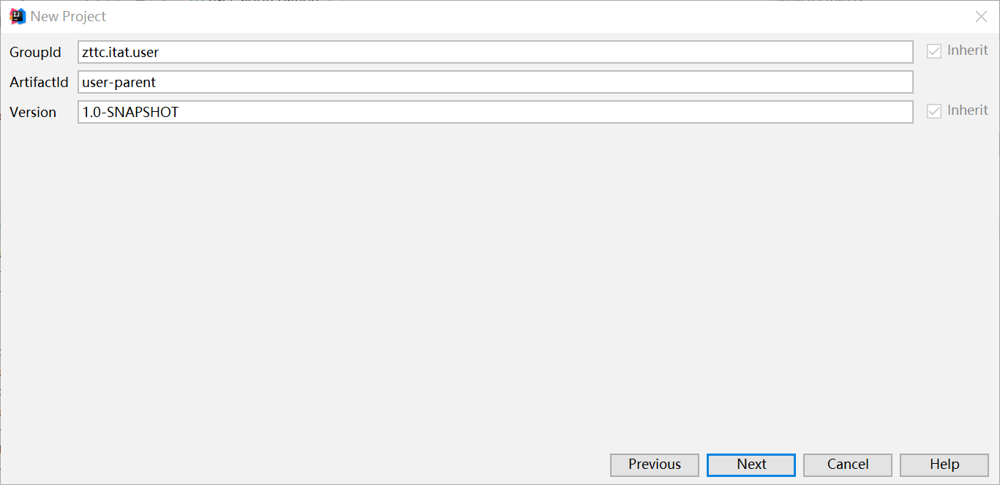
然后我们先将user-core中的一部分剪切到user-parent中的pom.xml：
这样就可以再user-core的pom.xml中删掉这部分内容，然后我们去继承这个parent：
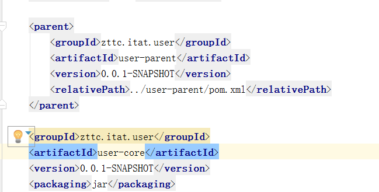
发现继承以后，groupId等行会变色，这也就是提示我们，那些东西在parent中已经有了，继承就可以，不需要重复写了，所以我们删除黄色部分。
同样的，我们将
对于依赖的继承而言，都需要通过dependencyManagement来完成管理，如果不管理子类会全部继承，这种可能会导致一些模块存在不需要的依赖。
我们可以在parent中的pom.xml添加一个dependencyManagement，然后把每个模块的所有依赖都添加进来，这样我们就可以在每个单独的模块中删掉版本和scope删除掉。
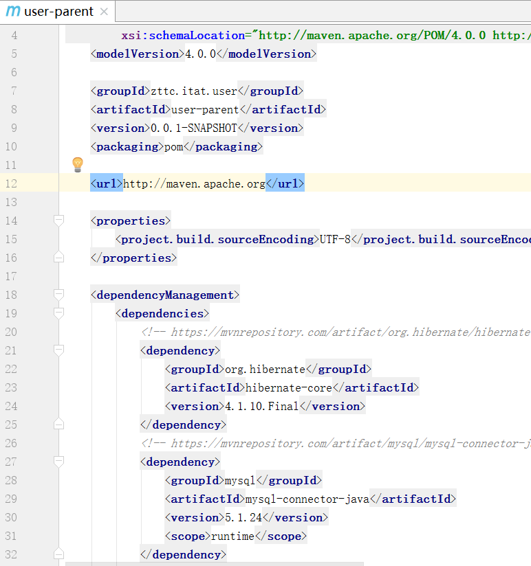
这样就完成了继承。
其实我们可以将继承和聚合合并在一起，就是把聚合的部分复制到user-parent项目的pom.xml中：
这样我们其实只需要一个pom.xml文件就可以了。
然后我们执行clean package操作，就得到如下结果：
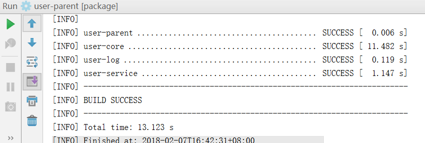
都顺利通过！
maven版本管理
总版本号.分支版本号.小版本号-里程碑版本
总版本号的变动一般表示框架的变动
分支版本号：一般表示增加了一些功能
小版本号：在分支版本上面进行bug的修复
里程碑：
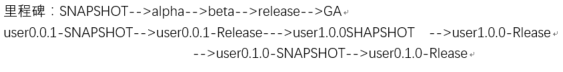